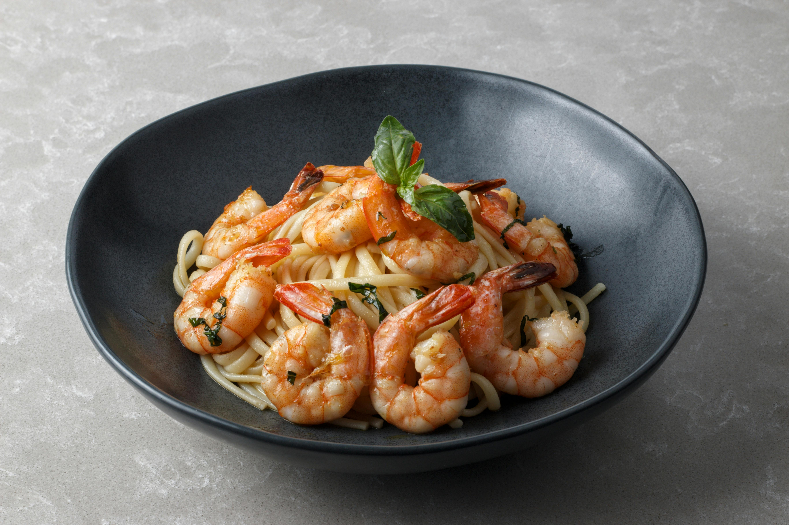

Home
Garlic Shrimp Pasta

Description
Garlic Shrimp Pasta is a classic Mediterranean dish. It is an ideal meal for those who want a restaurant-quality dinner that can be prepared in less than 20 minutes using simple, high-quality ingredients.
Ingredients
- 350 grams of spaghetti
- 500 grams of large shrimps (peeled and deveined)
- 5 cloves of garlic
- Olive oil
- Half a lemon
- 50 grams of Parmesan cheese
- Salt to taste
- 15 grams of fresh parsley
Steps
- Cook spaghetti in a pot of salted boiling water until it is soft but still firm to the bite (al dente).
- Heat the olive oil in a large pan over medium heat and add the garlic. Cook for 1 minute until you smell the garlic, but do not let it brown.
- Add shrimps to the pan and fry them for 2 minutes on each side until they turn pink.
- Pour the lemon juice into the pan. Let it bubble for 2 minutes.
- Put the cooked spaghetti into the pan. Toss everything together.
- Turn off the heat. Sprinkle the Parmesan cheese and parsley over the top. Stir one last time and serve hot.